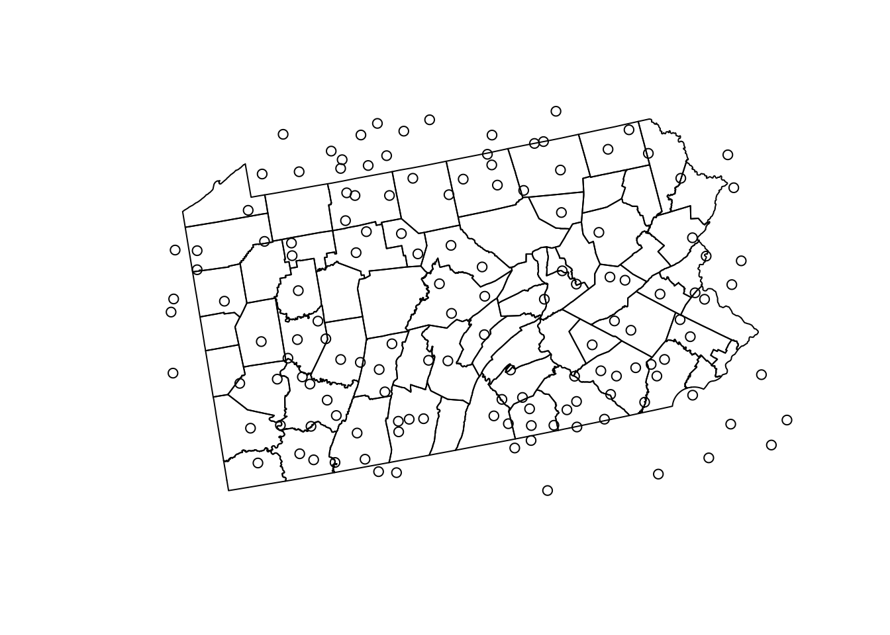
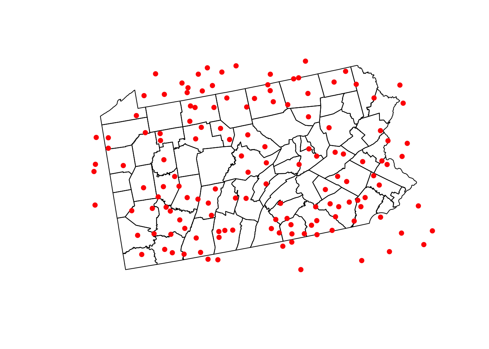
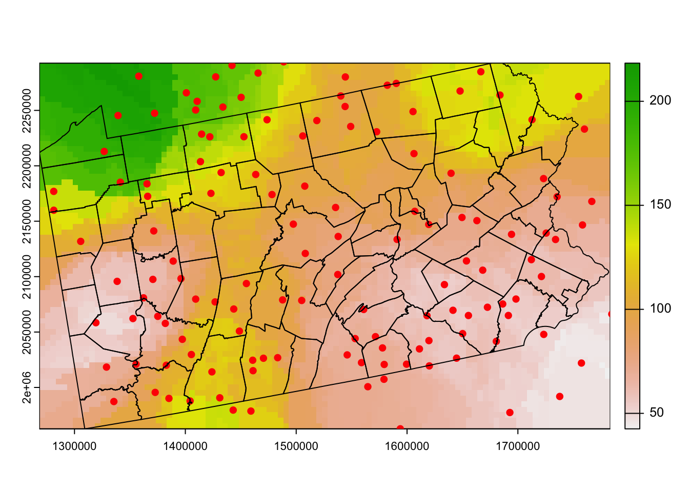

13 Using Data in R
This code is designed to process data downloaded from Climate Date Online. http://www.ncdc.noaa.gov/cdo-web/ This version looks at weather stations that provide snowfall data in and around Pennsylvania. The code pulls out the desired data from the downloaded aggregate weather-station file and calculates the mean annual snowfall per weather station for 12/1/94 - 3/31/05. The data is then exported to a text file for interpolation in ArcGIS. - Bill Kanapaux, PA Cooperative Fish & Wildlife Research Unit
Last modified: Jan. 13, 2014
1. Open the script “Weather-Station-Code_Snowfall.Rmd” and run code directly from the script
2. First we need to load the packages needed for the exercise
3. Now let’s have a separate section of code to include projection information we will use throughout the exercise. In previous versions, these lines of code were within each block of code
4. This code is designed to process data downloaded from NOAA Date. This version looks at weather stations that provide snowfall data in and around Pennsylvania. The code pulls out the desired data from the downloaded aggregate weather-station file and calculates the mean annual snowfall per weather station for 12/1/94 - 3/31/05. The data is then exported to a text file for interpolation in R or ArcGIS. First, we read weather station data - note the use of stringsAsFactors=FALSE and na.strings=‘-9999’
WS <-read.table("data/Weather_Station_Data-Sep_01Dec1994-31March2005.txt",
stringsAsFactors=FALSE, na.strings='-9999',header=T)#Reformat DATE and create Year Month Day columns from NewDate column ###
WS$NewDate <- as.Date(as.character(WS$DATE), format("%Y%m%d"))
WS$Year = as.numeric(format(WS$NewDate, format = "%Y"))
WS$Month = as.numeric(format(WS$NewDate, format = "%m"))
WS$Day = as.numeric(format(WS$NewDate, format = "%d"))5. Make a subset of WS that includes only the months of Dec-March with further manipulation of the data for desired output of project objectives.
#Create a matrix of unique STATION values (GHCND ) with Lat/Long values for later reference.
### Data contains some multiple versions of individual GHCND coordinates. Only want 1 set per.
PulledCoords <- Winter[!duplicated(Winter[,1]),]
CoordChart <- ddply(PulledCoords, c('STATION'), function(x) c(Lat=x$LATITUDE, Long=x$LONGITUDE))
#Get the number of snowfall records for each STATION for each year and name it RecordTotal.
#Note that NA is omitted from the length count
WinterRecords <- ddply(Winter, .(STATION,Year), summarize, RecordTotal = length(na.omit(SNOW)))
#Get the total amount of snowfall per STATION per year and name it YearlySnow
YearlySnow <- ddply(Winter, .(STATION,Year), summarize, Snow = sum(SNOW, na.rm=TRUE))
#Combine WinterRecords and YearlySnow into one matrix
AllWinters <- cbind(WinterRecords,YearlySnow)
AllWinters <- AllWinters[,-4:-5]
#Only include years that have more than 75% of days recorded
WinterDays <- 121
FullWinters <- AllWinters[AllWinters$RecordTotal/WinterDays > 0.75, ]
#Get the number of years with more than 75% of days recorded for each STATION
WinterYears <- ddply(FullWinters, c('STATION'), function(x) c(TotalYears=length(x$Year)))
#Get the total amount of snow for each station for all years
TotalWinterSnow <- ddply(FullWinters, c('STATION'), function(x) c(TotalWinterSnow=sum(x$Snow)))
#Combine WinterYears and TotalWinterSnow into one matrix
SnowCalc <- cbind(WinterYears,TotalWinterSnow)
SnowCalc <- SnowCalc[,-3]
#Get rid of the stations that don't have at least 10 years recorded at >75% of days ###
Complete.Records <- SnowCalc[SnowCalc$TotalYears > 9, ]
#Calculate average annual snowfall and round to nearest mm
Complete.Records$MeanAnnualSnowfall <- Complete.Records$TotalWinterSnow/Complete.Records$TotalYears
Complete.Records$MeanAnnualSnowfall <- round (Complete.Records$MeanAnnualSnowfall, digits = 0)
#Convert SnowDepth from mm to cm
Complete.Records$MeanAnnualSnowfall <- Complete.Records$MeanAnnualSnowfall/10
head(Complete.Records) STATION TotalYears TotalWinterSnow MeanAnnualSnowfall
1 GHCND:USC00072730 11 3493 31.8
3 GHCND:USC00079605 10 4967 49.7
4 GHCND:USC00181530 11 7232 65.7
5 GHCND:USC00181750 11 4828 43.9
7 GHCND:USC00182282 11 7496 68.1
8 GHCND:USC00182336 11 8420 76.5#Add a column to CoordChart showing whether each row matches a STATION in Complete.Records
#Use "NA" for value if no match, then delete rows with "NA" value.
#Number of rows in CoordChart should now equal number of rows in Complete.Records
CoordChart$match <- match(CoordChart$STATION, Complete.Records$STATION, nomatch=NA)
CoordChart <- na.omit(CoordChart)
#Combine Complete.Records and CoordChart. Make sure each STATION matches in row
#Delete any rows that don't match. Shouldn't be any. If number of rows in Final.Values
#is less than number of rows in CoordChart, there is a problem (but note that # of cols does change).
Final.Values <- cbind(Complete.Records,CoordChart)
Final.Values$match2 <- match(Final.Values[ ,1], Final.Values[ ,5], nomatch=NA)
Final.Values <- na.omit(Final.Values)
dim(Final.Values)[1] 144 9dim(CoordChart)[1] 144 4#Take out unnecessary rows (2nd STATION, match, and match2) and round MeanSnow to 2 decimal places
Final.Values[,5] <- Final.Values[,8] <- Final.Values[,9] <- NULL6. Make data frame to get rid of lists (in R) so can export to text file to use to load weather station points into ArcGIS and skip to Section 2.5.
Final.Values <- as.data.frame(lapply(Final.Values,unlist))write.table(Final.Values, "MeanSnowData_95-05.txt", sep="\t", row.names=F)7. Alternatively we can conduct interpolation directly in R using the steps below
merge <-st_as_sf(Final.Values, coords = c("Long","Lat"),crs = ll.crs)
merge <- st_transform(merge, albers.crs)
PAcounties <- counties("Pennsylvania", cb = TRUE)
|
| | 0%
|
| | 1%
|
|= | 1%
|
|= | 2%
|
|== | 2%
|
|== | 3%
|
|=== | 4%
|
|=== | 5%
|
|==== | 5%
|
|==== | 6%
|
|===== | 7%
|
|===== | 8%
|
|====== | 8%
|
|====== | 9%
|
|======= | 10%
|
|======== | 12%
|
|========= | 13%
|
|========== | 14%
|
|========== | 15%
|
|=========== | 16%
|
|============ | 17%
|
|============= | 19%
|
|============== | 19%
|
|============== | 20%
|
|============== | 21%
|
|=============== | 21%
|
|=============== | 22%
|
|================ | 22%
|
|================ | 23%
|
|================= | 24%
|
|================= | 25%
|
|================== | 26%
|
|=================== | 26%
|
|==================== | 28%
|
|==================== | 29%
|
|===================== | 29%
|
|===================== | 30%
|
|====================== | 31%
|
|====================== | 32%
|
|======================= | 32%
|
|======================= | 33%
|
|========================= | 36%
|
|========================== | 37%
|
|========================== | 38%
|
|=========================== | 38%
|
|=========================== | 39%
|
|============================ | 39%
|
|============================ | 40%
|
|============================ | 41%
|
|============================= | 41%
|
|============================== | 42%
|
|============================== | 43%
|
|=============================== | 44%
|
|========================================= | 58%
|
|================================================== | 72%
|
|======================================================= | 79%
|
|================================================================= | 93%
|
|======================================================================| 100%PAcounties <- st_transform(PAcounties, albers.crs)
plot(st_geometry(PAcounties))
plot(st_geometry(merge),add=T)
#Import a county layer for study site and check projections
#counties<-st_read("data/PaCounty2019_05.shp")
#st_crs(counties)#Copy and Paste State Plane projection into code for StatePlane below
#Project Weather Stations and Counties to State Plane
#StatePlane <- CRS("+proj=lcc +lat_0=39.3333333333333 +lon_0=-77.75 +lat_1=40.9666666666667 #+lat_2=39.9333333333333 +x_0=600000 +y_0=0 +ellps=GRS80 +units=m +no_defs +type=crs")
stations <- merge
stations$MAS <- stations$MeanAnnualSnowfall#Create a grid onto which we will interpolate:
bb <- st_bbox(PAcounties) %>% st_as_sfc()
grid_spacing <- 5000
grid <- st_make_grid(bb, square = T, cellsize = c(grid_spacing, grid_spacing)) %>% # the grid, covering bounding box
st_intersection(bb) %>%
cbind(data.frame(ID = sprintf(paste("GID%0",nchar(length(.)),"d",sep=""), 1:length(.)))) %>%
st_sf()
#Convert grid to a raster to use later
rgrid <- rast(grid, res=5000)#, type="xyz",crs = albers.crs,digits=6,extent=NULL)
plot(st_geometry(bb))
plot(st_geometry(grid),add=T)
#Plot Weather Stations over counties
plot(st_geometry(PAcounties))
plot(st_geometry(stations), add=T, pch=16, col="red")
nearest neighbor interpolate grid over sample points directly in R with gstat package
stations2 <- sf_to_df(stations, fill=TRUE)
gOK <- gstat(formula=MAS~1, data=stations2, locations=~x+y, nmax=10, set=list(idp=0))
x <- interpolate(rgrid, gOK,debug.level=0)
class(x)[1] "SpatRaster"
attr(,"package")
[1] "terra"plot(x,1)
plot(st_geometry(stations), add=T, pch=16, col="red")
plot(st_geometry(PAcounties), add=T)
nmax = maximum number of points used is 10
idp = inverse distance power is zero so that all 10 neighbors are equally weighted